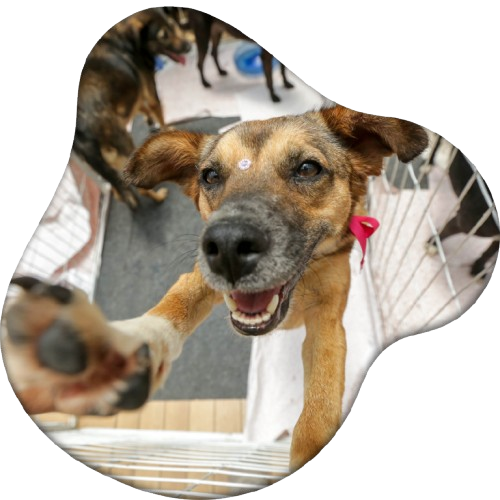
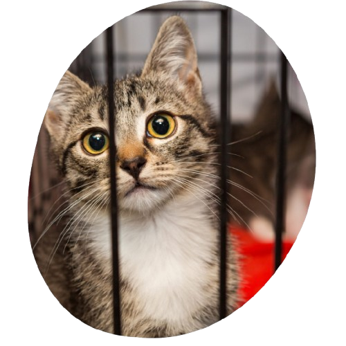

QUEREMOS AJUDAR A TRANSFORMAR VIDAS!
O Patas ao Lar é um projeto criado com o objetivo de aproximar animais que precisam de um novo lar de pessoas que desejam adotar com responsabilidade.
Acreditamos que a tecnologia pode ser uma grande aliada na divulgação de animais para adoção, facilitando o contato entre pessoas, ONGs e protetores.
Nosso propósito
O Patas ao Lar nasceu com a intenção de tornar o processo de adoção mais simples, acessível e organizado.
Queremos ajudar animais a encontrarem famílias que possam oferecer carinho, segurança e uma vida melhor.
Como podemos ajudar?
A plataforma permite que animais disponíveis para adoção sejam apresentados de maneira clara, facilitando para os interessados conhecerem cada pet antes de iniciar o processo de adoção.


Dessa forma, buscamos aproximar quem deseja adotar de quem trabalha diariamente para cuidar e proteger esses animais.
Todo animal merece um lar. 🐾
Adotar é oferecer uma nova oportunidade, construir uma amizade e transformar duas vidas ao mesmo tempo.